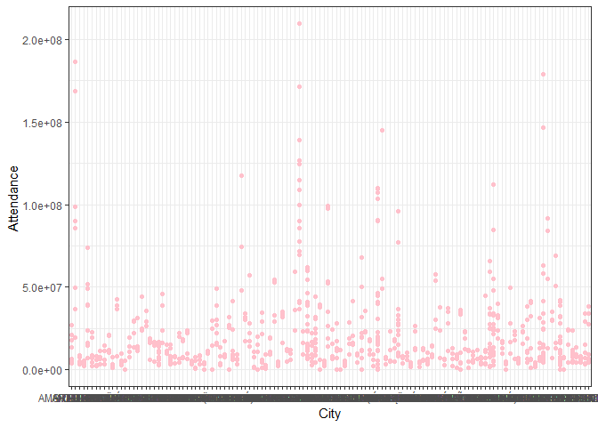

linear regression
2023-12-05
Regression
Linear Regression
Linear regression is used to model the relationship between attendance and five independent variables (city, country, year, type, and region). It assumes that this relationship is linear, meaning changes in the predictors are associated with a constant change in the response. We first fit linear regression of each predictors to check if they are associated with attendance.
Fit a simple linear regression between city and attendance

a few cities are associated with attendance such as ANAHEIM, Beijing, UNIVERSAL CITY, TOKYO, VATICAN. In general, there is no apparent linear relationship between city and attendance.
Fit a simple linear regression between country and attendance

only one country Japan is significantly associated with attendance. In general, there is no apparent linear relationship between country and attendance.
Fit a simple linear regression between year and attendance
##
## Call:
## lm(formula = attendance ~ year, data = data_df)
##
## Residuals:
## Min 1Q Median 3Q Max
## -22189468 -14873528 -8200722 4982092 184429278
##
## Coefficients:
## Estimate Std. Error t value Pr(>|t|)
## (Intercept) 6104922321 1747418850 3.494 0.000505 ***
## year -3011254 864862 -3.482 0.000527 ***
## ---
## Signif. codes: 0 '***' 0.001 '**' 0.01 '*' 0.05 '.' 0.1 ' ' 1
##
## Residual standard error: 2.6e+07 on 738 degrees of freedom
## Multiple R-squared: 0.01616, Adjusted R-squared: 0.01483
## F-statistic: 12.12 on 1 and 738 DF, p-value: 0.0005274according to the summary of linear regression, \(\widehat{Y}=\widehat{\beta_0}+\widehat{\beta_1}*X\). Linear Model: \(\widehat{attendance }=6104922321-3011354*year\).

Year is significantly associated with attendance, and there is a linear relationship between year and attendance. Attendance has experienced a decline from 2019 to 2022.
Fit a simple linear regression between park type and attendance

Park type is significantly associated with attendance. Amusement/Theme Park has the highest attendance and water park has the lowest attendance.
Fit a simple linear regression between region and attendance

Latin America is significantly associated with attendance. Overall, there is no apparent linear relationship between region and attendance.
Fit a Multiple linear regression
Multiple linear regression allows us to account for the influence of multiple independent variables on the attendance simultaneously. The outcomes of the linear regression analysis suggest that the variable “year” exhibits a linear relationship with attendance. Additionally, specific categories within the “type” and “region” variables are found to be significantly associated with attendance. Thus, variables “year”, “type”, and “region” are used to fit a multiple linear regression.
##
## Call:
## lm(formula = attendance ~ year + type + region, data = data_df)
##
## Residuals:
## Min 1Q Median 3Q Max
## -45964074 -11813664 -4985390 6989976 161399771
##
## Coefficients:
## Estimate Std. Error t value Pr(>|t|)
## (Intercept) 4621928259 1470060108 3.144 0.00173 **
## year -2266156 727662 -3.114 0.00192 **
## typeMuseum -28938548 2387097 -12.123 < 2e-16 ***
## typeWater Park -31241190 1983578 -15.750 < 2e-16 ***
## regionEMEA -14707744 2635034 -5.582 3.36e-08 ***
## regionEurope Middle East Africa 9197198 3154499 2.916 0.00366 **
## regionLatin America -19240504 2955262 -6.511 1.39e-10 ***
## regionNorth America 1670022 2040565 0.818 0.41339
## ---
## Signif. codes: 0 '***' 0.001 '**' 0.01 '*' 0.05 '.' 0.1 ' ' 1
##
## Residual standard error: 21800000 on 732 degrees of freedom
## Multiple R-squared: 0.3141, Adjusted R-squared: 0.3075
## F-statistic: 47.88 on 7 and 732 DF, p-value: < 2.2e-16only North America within region is not significantly associated with attendance.
Stepwise regression
stepwise regression helps streamline the modeling process by automatically including or excluding variables based on statistical criteria. We use both backward and forward selection to find the best fit model.
## Start: AIC=25016.07
## attendance ~ year + type + region
##
## Df Sum of Sq RSS AIC
## <none> 3.4784e+17 25016
## - year 1 4.6088e+15 3.5245e+17 25024
## - region 4 4.0930e+16 3.8877e+17 25090
## - type 2 1.3329e+17 4.8113e+17 25252
##
## Call:
## lm(formula = attendance ~ year + type + region, data = data_df)
##
## Coefficients:
## (Intercept) year
## 4621928259 -2266156
## typeMuseum typeWater Park
## -28938548 -31241190
## regionEMEA regionEurope Middle East Africa
## -14707744 9197198
## regionLatin America regionNorth America
## -19240504 1670022The best fit model with lowest AIC is \(\widehat{attendance}=\widehat{\beta_0}+\widehat{\beta_1}*year+\widehat{\beta_2}*type+\widehat{\beta_3}*region\).